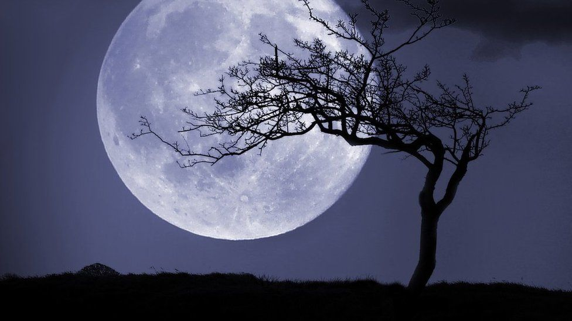
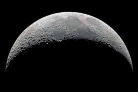
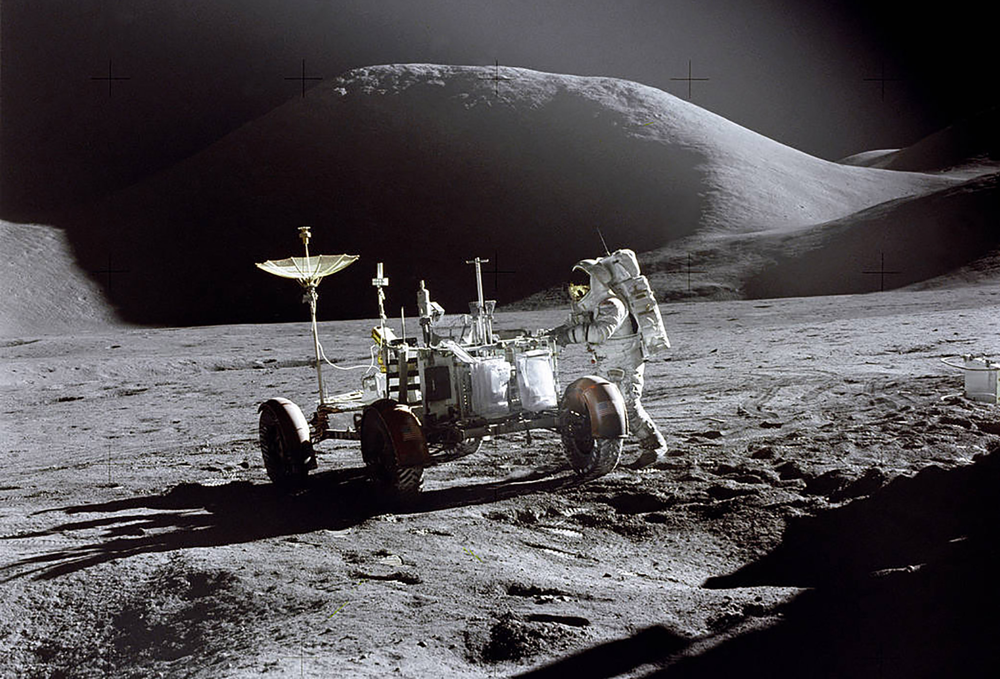

IMPORTANT INFORMATION

The Moon is Earth's only natural satellite. It orbits at an average distance of 384,400 km, about 30 times Earth's diameter.

The lunar surface is covered in lunar dust and marked by mountains, impact craters, their ejecta, ray-like streaks and, mostly on the near side of the Moon.

The details of the gravitational field have been measured through tracking the Doppler shift of radio signals emitted by orbiting spacecraft.

Humans last landed on the Moon during the Apollo Program, a series of crewed exploration missions carried out from 1969 to 1972.